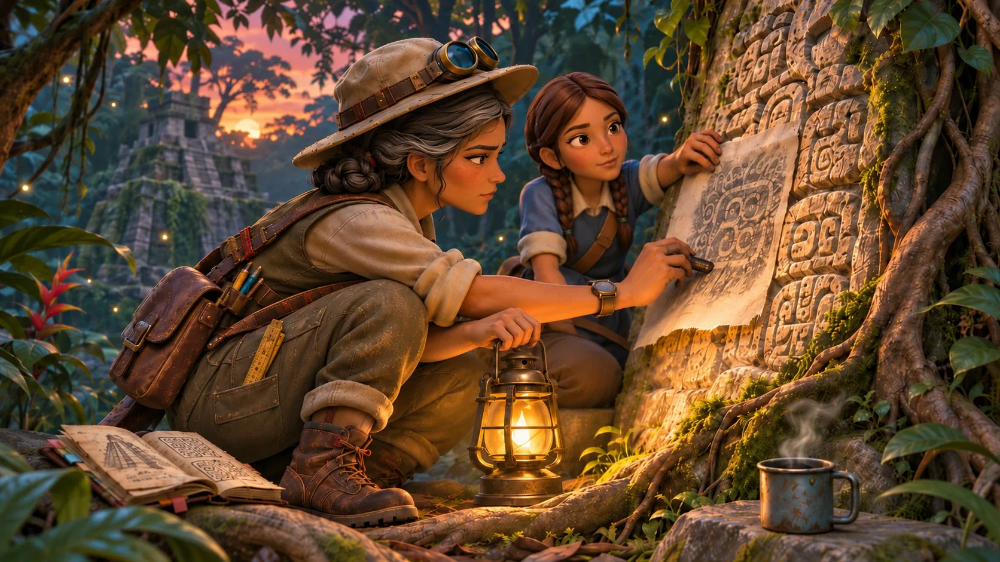
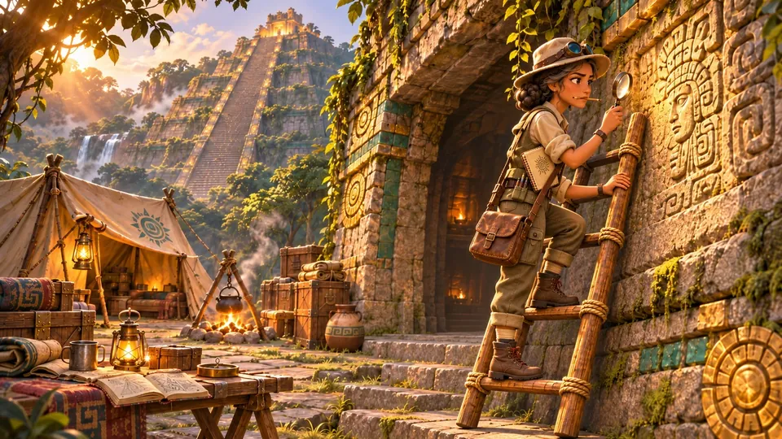

Home / Characters
The missing mother
Dr. Isabel Kaan
An epigrapher who argued that the Spirit Mural hides a betrayal. The experts dismissed her. Fourteen months ago she vanished.
Isabel never appears in the present. She exists through her notebooks, her goggles, Kaya's memories, and what other people do with her name.
She grew up speaking Yucatec Maya at home and chose epigraphy because the walls were records her people had written to be read. Her theory came from fragmentary copies of the temple's glyphs: a seam in spacing and grammar on one panel that no careless copyist or carver would explain.
She never stood in the hall herself. Her last paper breaks off mid-sentence: “consistent with, though I would want to stand in the hall and see the cut for myself before I”. She is missing, not dead, and the story keeps her that way.
- Role
- Backstory character, the expert ignored
- Age
- 51 when she vanished
- Signature
- A red waxed whipstitch on every strap she ever mended, and a hooked stroke on her shell-glyph zero
- Habit
- A Book of Mistakes, read aloud once a year on her birthday



“A wall doesn't lie, but the reader can.”
Dr. Isabel Kaan
Design notes
Isabel shares Kaya's high cheekbones, strong nose and stillness, but she is older, smaller and dressed for decades of fieldwork: canvas, khaki and a sweat-stained field hat, with the same bronze goggles Kaya now wears. The red whipstitch is a quiet visual link that Kaya keeps looking for in the temple.